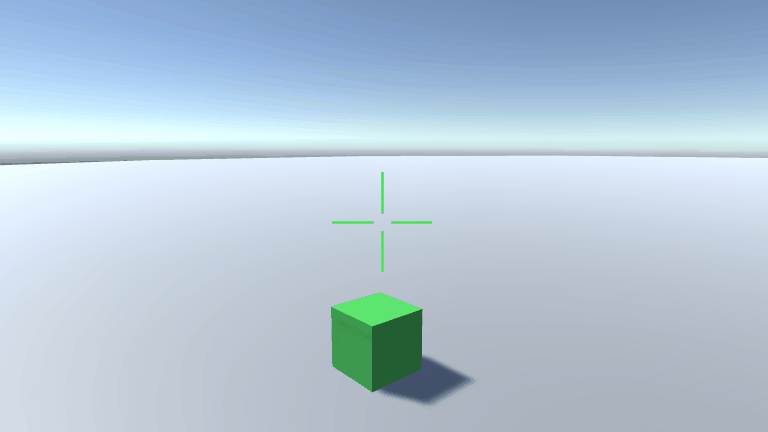
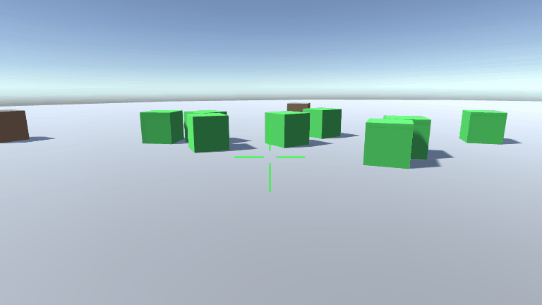
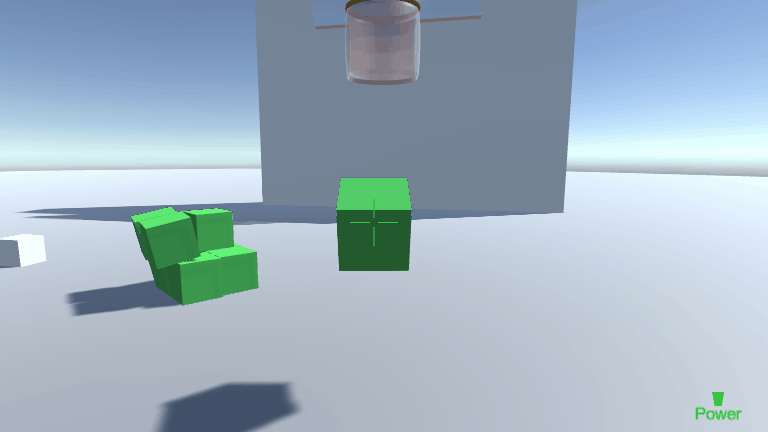
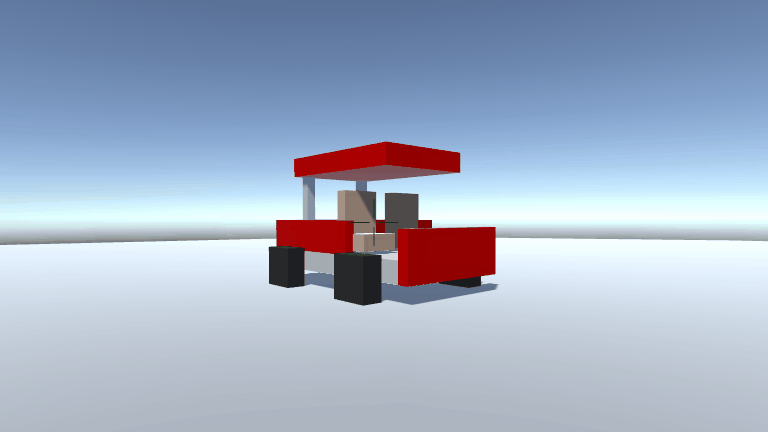
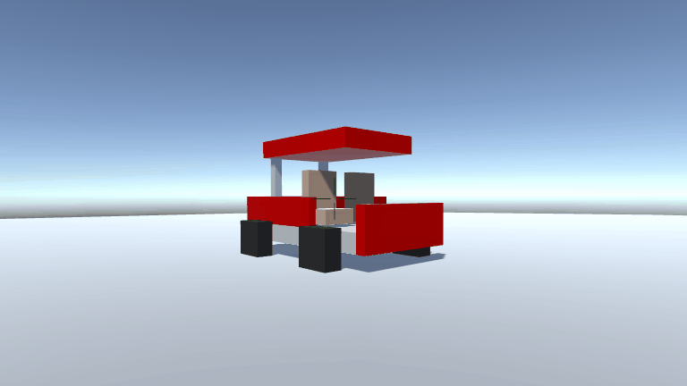

Dimitri Charneux
Développeur Unity
Loos 59120
dimitri.charneux@gmail.com
06.69.17.06.34
Téléchargez le CV ou consultez mon profil LinkedIn
Compétences
C#, Unity
Java
SQL
C++
Blender
Langages
Français
Anglais
Déplacement 3D
Objectifs
Réaliser une ébauche d'application en 3D dans laquelle on peut se déplacer et interagir avec le décor.
- Gestion des déplacements du personnage
- Gestion de la physique des objets
- Utilisation des raycasts
- Interaction avec les objets de la scène
Démonstration
En cours d'implémentation
L'application
Il n'y a pas réellement d'objectif dans cette application. L'utilisateur peut se déplacer dans la scène et interagir avec son environnement de différentes manières :
- en attrapant un objet avec la touche e
- en faisant une explosion avec le clique droit
- en lancant une balle avec le clique gauche



Quand l'utilisateur a saisi un objet, il a la possibilité de le rapprocher ou l'éloigner de son personnage en utilisant la molette. Il peut ensuite le lacher avec le clique droit ou le lancer avec le gauche.
éloignement de l'objet, on le lache, on le lance
L'utilisateur peut régler la puissance du lancé en maintenant appuyer la touche Ctrl et en utilisant sa molette.

Des objets destructibles sont également présents dans la scène. Quand ils recoivent un choc d'une certaine intensité, via une explosion ou une collision, ils sont désassemblés en plus petits objets.
 

PS : Les ralentissement que l'on voit dans les images sont dûs au logiciel d'enregistrement, et non à l'application.